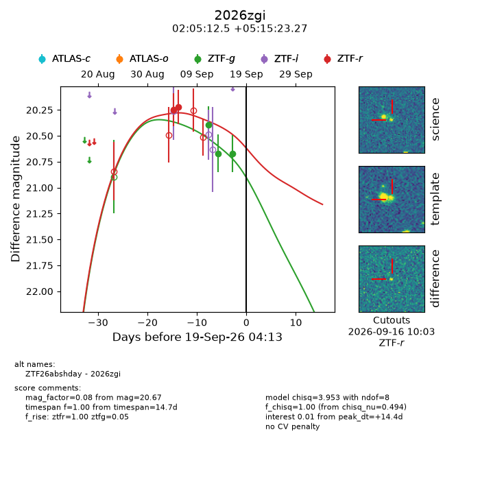
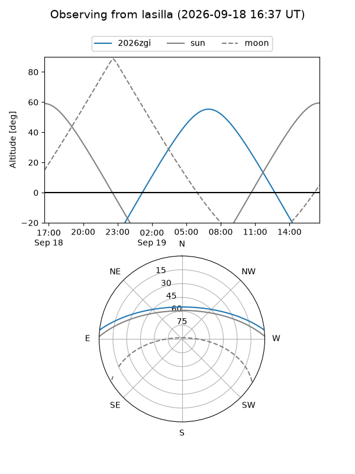
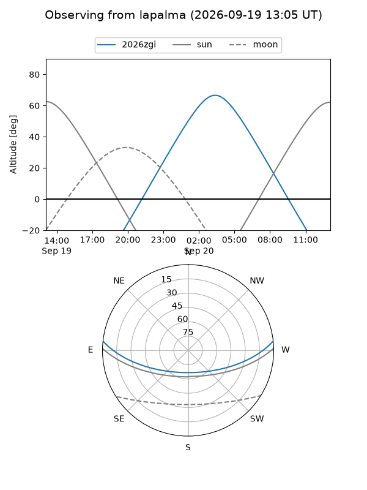
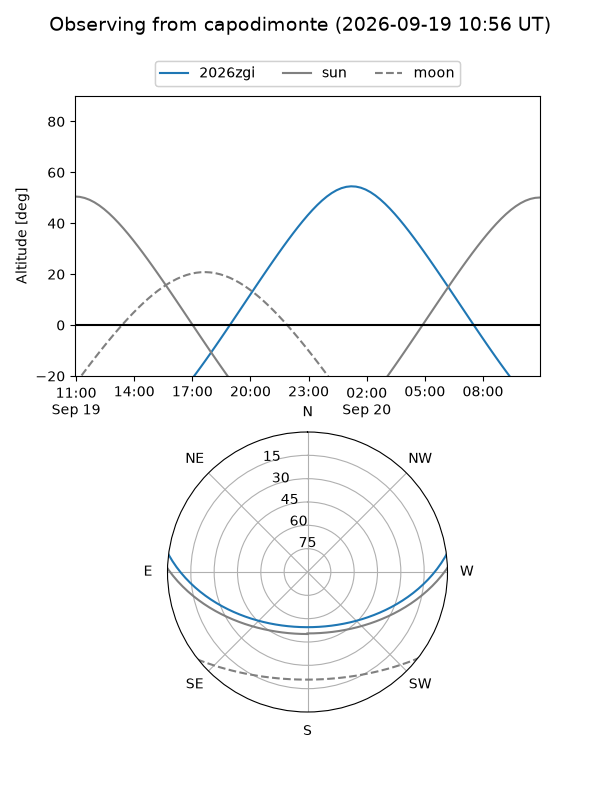
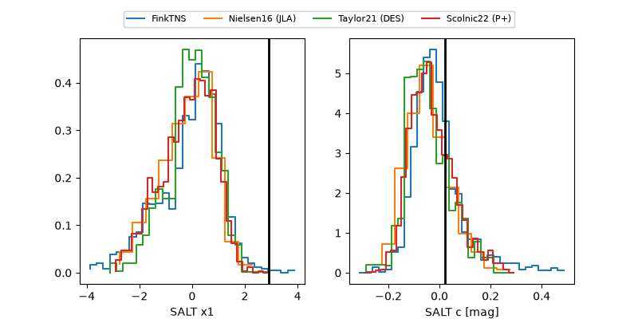

2026zgi
Target 2026zgi at 2026-09-19 16:00
Aliases and brokers:
FINK-ZTF: ztf.fink-portal.org/ZTF26abshday
Lasair-ZTF: lasair-ztf.lsst.ac.uk/objects/ZTF26abshday
ALeRCE-ZTF: alerce.online/object/ZTF26abshday
YSE-PZ: ziggy.ucolick.org/yse/transient_detail/2026zgi
TNS name: wis-tns.org/object/2026zgi
Direct TNS query: direct search
alt names
ZTF26abshday (ztf,fink_ztf)
2026zgi (tns,yse)
Coordinates:
equatorial (ra, dec) = 31.3021,+5.25646
equatorial (HMS+DMS) = 02:05:12.51,+05:15:23.27
galactic (l, b) = (154.5212,-53.03032)
Flags:
TNS type: nan
peak dt: +14.9
Photometry:
last ztfg=20.67, ztfr=20.22
3 ztfg, 2 ztfr detections
Lightcurve

Visibility



Additional plots
